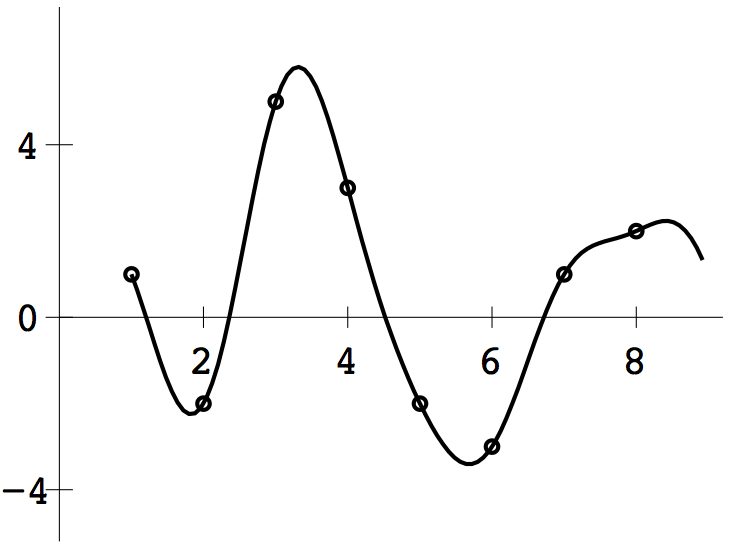

1 (b) Applying the DFT to \([2, -1, 0, 1, 1, 3, -1, -1]^T\) gives \[F_8 \left[\begin{array}{r} 2\\-1\\0\\1\\1\\3\\-1\\-1\\ \end{array}\right]= \frac{1}{\sqrt{8}} \left[\begin{array}{c} 4\\1-3\sqrt{2}+(\sqrt{2}-1)i\\ 4-2i\\1+3\sqrt{2}+(\sqrt{2}+1)i\\0\\1+3\sqrt{2}-(\sqrt{2}+1)i\\4+2i\\1-3\sqrt{2}-(\sqrt{2}-1)i\\ \end{array}\right], \] so \(a_0=\sqrt{2}, a_1=(-6+\sqrt{2})/4, a_2=\sqrt{2}, a_3=(6+\sqrt{2})/4, a_4=0, b_1=(2-\sqrt{2})/4, b_2=-\sqrt{2}/2, b_3=(2+\sqrt{2})/4\). Corollary 10.8 implies that \(P_8(t)=\frac{1}{2}+\frac{1-3\sqrt{2}}{4}\cos 2\pi t + \frac{1-\sqrt{2}}{4}\sin 2\pi t+ \cos 4\pi t+\frac{1}{2}\sin 4\pi t +\frac{1+3\sqrt{2}}{4}\cos 6\pi t- \frac{1+\sqrt{2}}{4}\sin 6\pi t.\) See below for the plot from dftinterp.
1 (c) Applying the DFT to \([3,1,4,2,3,1,4,2]^T\) gives \[F_8 \left[\begin{array}{r} 3\\1\\4\\2\\3\\1\\4\\2\\ \end{array}\right]= \frac{1}{\sqrt{8}} \left[\begin{array}{c} 20\\0\\ -2+2i\\0\\8\\0\\-2-2i\\0\\ \end{array}\right], \] so \(a_0=5\sqrt{2}, a_1=a_3=0, a_2=-\sqrt{2}/2, a_4=2\sqrt{2}, b_1=b_3=0, b_2=\sqrt{2}/2\). In Corollary 10.8, \(c=0\) and \(d=8\). Equation (10.19) becomes \[P_8(t)=\frac{5}{2}-\frac{1}{2}\cos \frac{\pi}{2}t -\frac{1}{2}\sin\frac{\pi}{2}t +\cos\pi t.\] The interpolant is plotted below.
1 (d) Applying the DFT to \([1,-2,5,3,-2,-3,1,2]^T\) gives \[F_8 \left[\begin{array}{r} 1\\-2\\5\\3\\-2\\-3\\1\\2\\ \end{array}\right]= \frac{1}{\sqrt{8}} \left[\begin{array}{c} 5\\3-(4+\sqrt{2})i\\ -7+10i\\3+(4-\sqrt{2})i\\5\\3-(4-\sqrt{2})i\\-7-10i\\3+(4+\sqrt{2})i\\ \end{array}\right]. \] In Corollary 10.8, \(c=1\) and \(d=9\). Equation (10.19) becomes \begin{eqnarray*} P_8(t)&=&\frac{5}{8}+\frac{3}{4}\cos \frac{\pi}{4}(t-1) +(1+\frac{\sqrt{2}}{4})\sin \frac{\pi}{4}(t-1)-\frac{7}{4}\cos \frac{\pi}{2}(t-1) -\frac{5}{2}\sin \frac{\pi}{2}(t-1)\\ &+&\frac{3}{4}\cos \frac{3\pi}{4}(t-1) -(1-\frac{\sqrt{2}}{4})\sin \frac{3\pi}{4}(t-1)+\frac{5}{8}\cos \pi(t-1). \end{eqnarray*} The trigonometric interpolant is plotted below.
